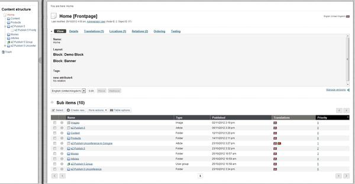
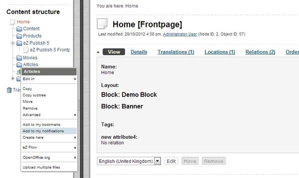
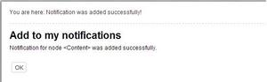
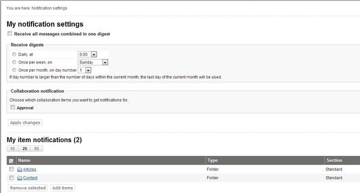
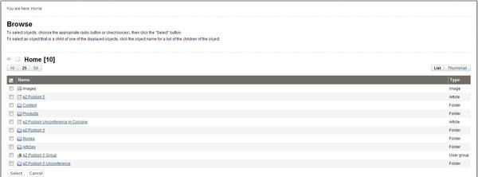
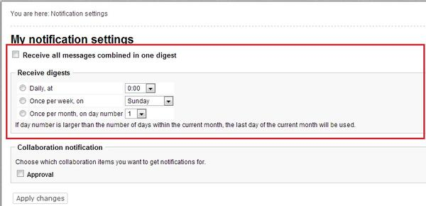
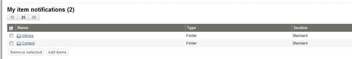
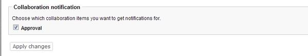

Using the admin interface
Subtree notifications
Subscribing
You can easily subscribe for subtree notifications about an object using either the context menu or the notification settings interface.
Using the context menu
To subscribe for subtree notification for an object, you should do the following:
Log in to the administration interface. You should see the "Content structure" tree on the left where the top node is selected. The following screenshot shows how the system will display the contents of the selected node and the list of its sub-items.

Content Structure Window
Locate the desired node in the "Content structure" tree or the "Sub items" window, click on its icon and select "Add to my notifications" from the context menu - this is shown in the screenshot below.

Add to My Notifications Option
The system will add a new subtree notification and show you a confirmation:

Add to My Notifications Window
Using the notification settings interface
It is possible to subscribe for subtree notifications for an object by adding this object to the "My item notifications" list located towards the bottom of the notification settings interface. The following text reveals how this can be done:
Click the "Dashboard" tab in the administration interface and select the "My notification settings" link on the left. You will be taken to the notification settings interface as shown in the screenshot below.

Notifications Settings
At the bottom of this interface you can see a list of your notifications.
The "My notifications settings" interface can be also accessed by adding the "/notification/settings" notation to the site URL.
Look at the "My item notifications" list located towards the bottom of the notification settings interface. All the items that you have already subscribed for are listed here. Click the "Add items" button to add a new notification.
The system will bring up the browse interface which will allow you to select the desired nodes:

Adding Notification Item
Use the list to select the node which encapsulates the object that you wish to be notified about. Please note that it is possible to select multiple nodes/objects at the same time. You can navigate the list by clicking on the names of the nodes. If the desired node is located outside the "Content structure" tree then simply click the up arrow icon/button until it brings you to the root of the tree. This operation will allow you to for example switch to the "User accounts" tree and select user groups that are located there. The following illustration shows the up-arrow.

The "Up" button
It is possible to reconfigure how the list is displayed. For example, you can set the quantity of objects per page by clicking the "10" / "25" and "50" links. If you wish to browse image objects as thumbnails, simply click the "Thumbnail" button.
When you're finished selecting the desired object(s) (simply use the check-boxes to do this) click the "OK" button. The system will subscribe you for subtree notifications about these objects and add them to the "My item notifications" list.
Setting up the digest mode
If you wish to receive the subtree notifications as a daily/weekly/monthly digest, enable the digest mode as described below.
Access the notification settings interface either by adding the "/notification/settings" notation to the URL or selecting "Dashboard - My notification settings" in the administration interface.
The digest settings are located at the top of the notification settings interface. By default, the digest mode is disabled.

Notifications Digest Disabled
To enable the digest mode, select the "Receive all messages combined in one digest" check-box and choose how often the digest should be sent to you.
Once a day, at some fixed time (from 0:00 to 23:00).
Once a week, on some fixed day (from Sunday to Saturday).
Once a month, on some fixed day (from 1 to 31).
Click the "Apply changes" button to save your settings.
Unsubscribing
If you no longer wish to receive notifications about an object, use the following instructions to unsubscribe.
Access the notification settings interface either by adding the "/notification/settings" notation to the URL or selecting "Dashboard" and then "My notification settings" in the administration interface.
The "My item notifications" list located towards the bottom of the notification settings interface contains all the items that you have already subscribed for. Use check-boxes to select the item(s) that you no longer wish to be notified about (see the screenshot below).

My Item Notifications
Click the "Remove selected" button. The system will remove the selected item(s) from the list of notifications and thus you will no longer receive any messages about that/those object(s).
Collaboration notifications
If you're using the collaboration system to work together with other people, you may wish to be notified by E-mail every time a new collaboration message is created for you. In this case, you should enable the collaboration notifications feature. The following text describes how to do this.
Access the notification settings interface either by adding the "/notification/settings" notation to the URL or selecting "dashboard" and then "My notification settings" in the administration interface.
Look at the "Collaboration notification" section located under the digest settings. By default, the collaboration notifications are disabled. If you wish to receive collaboration notifications, select the "Approval" check-box as shown in the following screenshot.

Collaboration Notifications
Click the "Apply changes" button to save your settings. The system will then send you an E-mail every time a new collaboration message is generated for you.
Please note that collaboration notifications do not support digest mode.
Powered by eZ Publish™ CMS Open Source Web Content Management. Copyright © 1999-2013 eZ Systems AS (except where otherwise noted). All rights reserved.